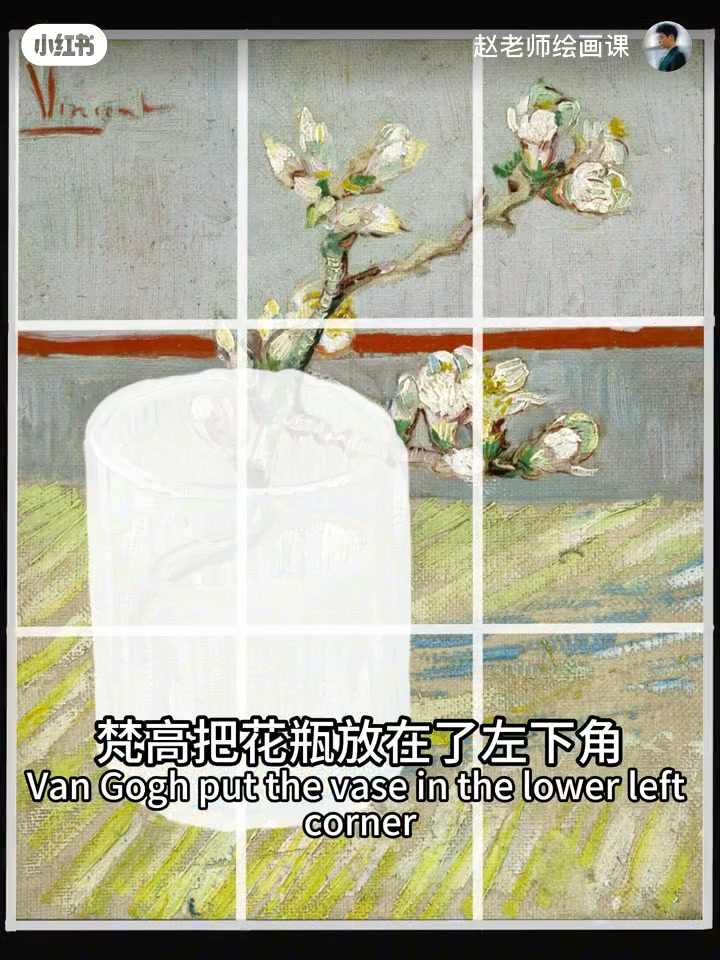
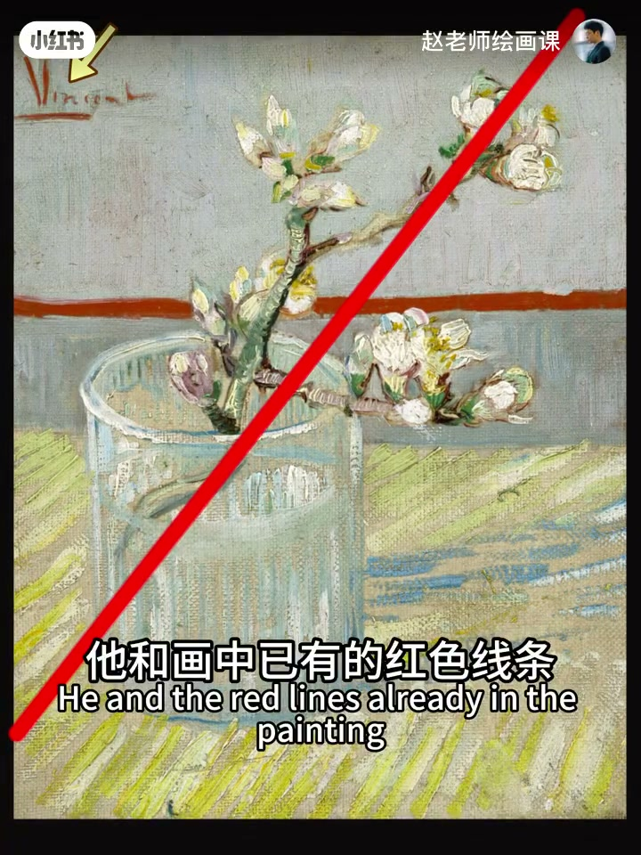
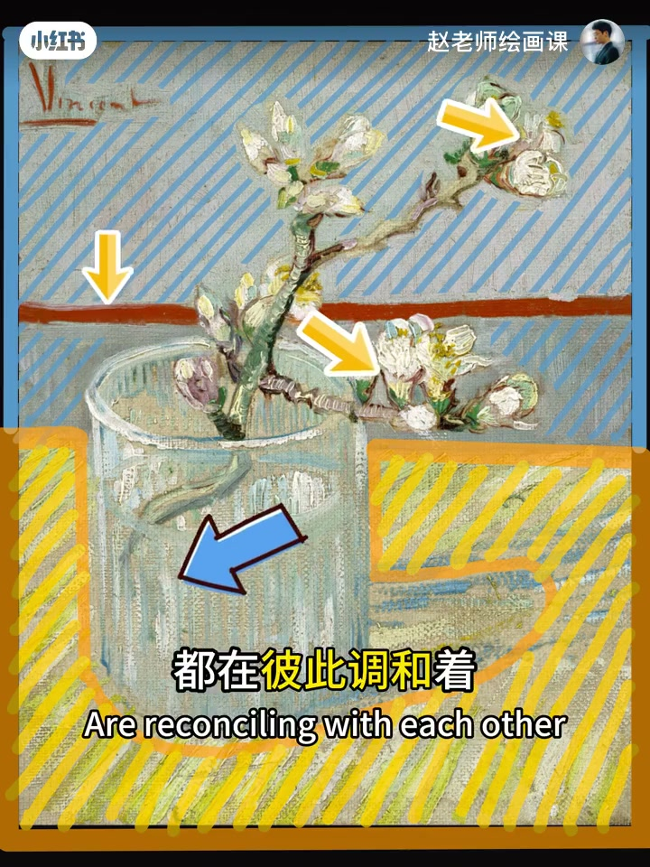
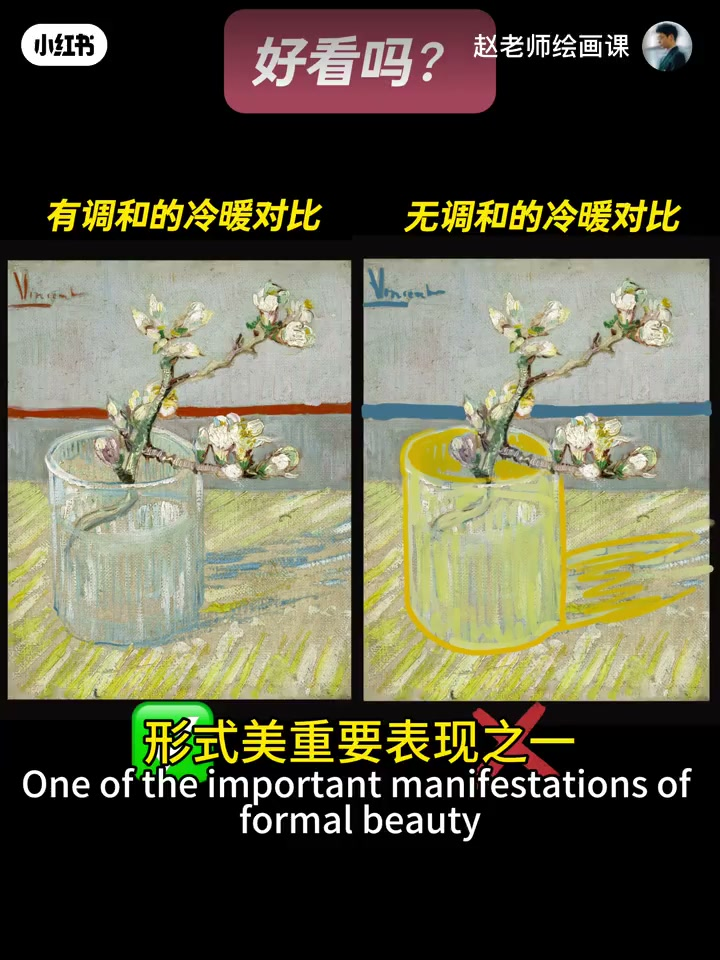

内容要点
梵高把花瓶放左下、花枝伸右上，大胆对角线既破常规又注入动感；再靠两条水平线压住斜线流动，做成动与静的微妙对比。签名登场：与画中红线共同形成向左上拉伸的三角形，彻底平衡不稳定感。色彩上高明度基调轻松柔和，冷暖强烈对比又彼此调和——暖桌冷杯、冷底暖瓣、醒目红线，签名也是红的。试着破坏安排就不好看：这正是形式美的对比与调和。下次别急着抠细节，先退后眯眼问主线形与主色对比如何安排。
知识结构
对角线动感＋水平线压斜线；签名与红线成三角平衡。
高明度＋冷暖对比；彼此调和避免割裂；破坏对照。
退后眯眼看主线形与色对比；摆脱照抄现实。
形式美常落在「对比＋调和」：先设计主线形与主色关系，再让细节服从这对张力与统一。
00:00-00:59构图：对角线、水平线与签名三角
借梵高玻璃杯中开花杏枝聊形式美。构图上：花瓶左下与右上伸展花枝形成大胆对角线，打破常规并注入动感；但光有动感易不稳——两条水平线横压斜线流动，同时创造动与静的微妙对比。
签名登场：与已有红线共同形成向左上拉伸的三角形，彻底平衡不稳定感。00:18 对角线／00:48 签名三角可指认。


00:59-01:38色彩：冷暖对比如何彼此调和
整体高明度基调让画面轻松柔和；强烈冷暖对比又注入活力。暖黄桌面上的冷色玻璃杯、冷色背景中的暖色花瓣，以及醒目红线，都在彼此调和，避免冷暖对立带来的割裂；签名也是红色。
试着破坏安排：无调和的冷暖对照立刻难看——恭喜你理解了对比与调和。01:18／01:35 是证据。


01:38-02:29观看口令：先关系后细节
面对场景别急扑细节：先退后一步眯眼看——主要线条与形状是什么？最显著色彩对比是什么？如何安排才能既有对比又统一于某种和谐气氛？
开始这样思考，就能慢慢摆脱照抄现实，转向更高级的艺术表现。尾段预告形式美构成课。
完整转录（64段）
以下文本由 Whisper medium 模型自动转录，可能存在少量识别误差，已尽可能修正。
一个签名能有多厉害
来 感受一下
好看吧
今天我们来借此话聊聊
什么是形式美
在构图上
樊高把花瓶放在了左下角
与右上方伸展的花枝
形成了一种大胆的对角线构图
既打破了常规
又为画面注入了动感
不过呀
光有动感容易显得不稳定
别担心
樊高通过画面中的两条水平线
用横线稳稳的压住了斜线的流动感
同时也创造了一种动与静的微妙对比
但这还没完
现在有请樊高的签名登场
他和画中已有的红色线条
共同形成了一个向左上方拉伸的三角形
彻底平衡了画面中的不稳定感
厉害吧
在色彩上
整体采用高明度基调
让画面显得轻松柔和
而强烈的冷暖对比
又为画面注入了活力
暖黄色桌面上的冷色玻璃杯
冷色背景中的暖色花瓣
以及那几笔醒目的红色线条
都在彼此调和着
避免了因冷暖对立而可能带来的割裂感
对了
你发现没
签名也是红色的
好 现在我们来试着破坏一下这个安排
还好看吗
恭喜你
你已经理解了形式美重要表现之一
对比与调和
总结在下面
所以啊
当你下次面对一个场景
别着急扑上去画细节
先往后退一步
眯起眼睛看
同时思考这几个问题
眼前的景物中主要的线条与形状是什么
最显著的色彩对比关系是什么样的
我该如何安排他们
才能让画面既有对比
又统一于某种和谐的气氛中
当你开始学着这样的思考
你会慢慢的发现
你已经可以摆脱照超现实
从而转向更高级的艺术表现了
如果你想让自己的画面
高级耐看又充满审美力
或者你想要真正的看懂大师作品
欢迎关注我即将上线的
形式美构成课程
我们下期再见
拜拜